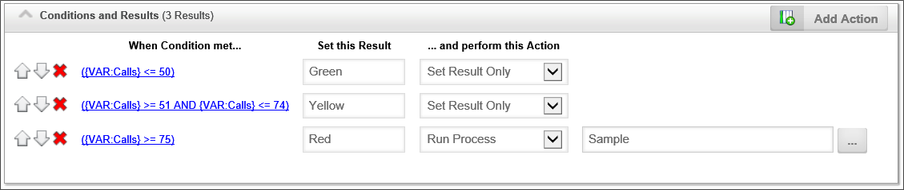
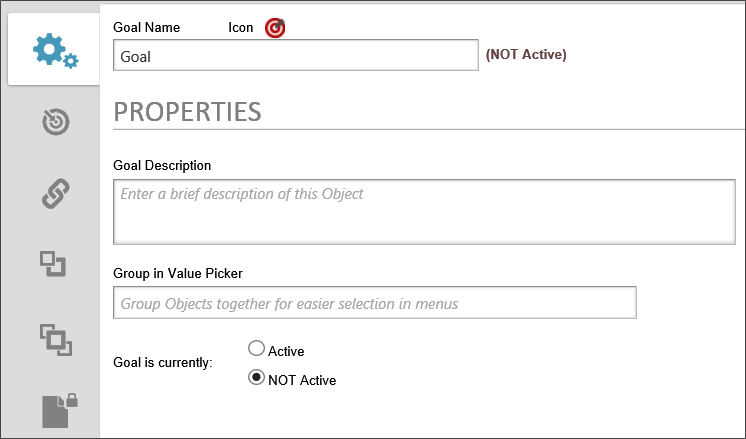
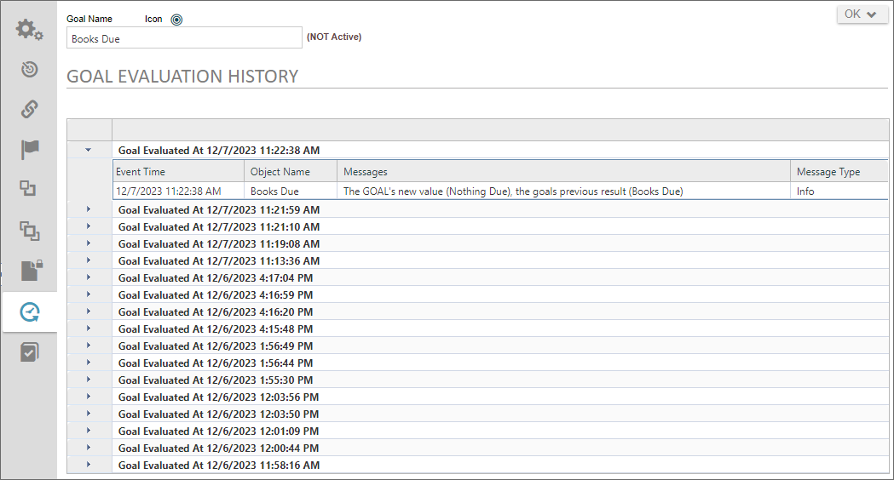
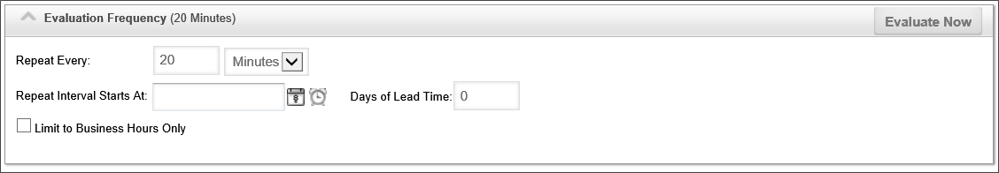
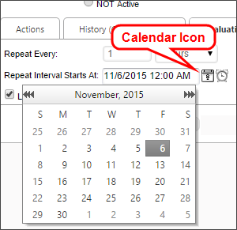
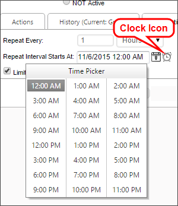
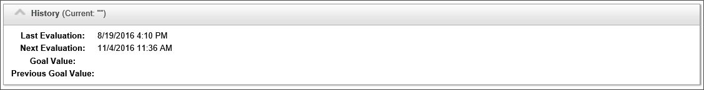

Goals
Goals are used to set a global state in the Process Director system, and to perform actions when a global state change occurs. A Goal returns a value, or set of values, based on conditions that the Goal regularly evaluates, on a schedule that is specified in the Goal definition. For instance, you can set a Goal to execute daily, hourly, etc., and set a global system state when the execution occurs.
Goals incorporate two completely distinct components: execution and examination. Execution occurs when the Goal evaluates the conditions and sets the state or value that results from the evaluation. Examination occurs when a another Process Director object references the Goal to retrieve the value that was set during the execution. Referencing a Goal (the examination) will always produce the result from the last time that Goal was executed. The Goal will return a null string if it has never evaluated, otherwise the examination will always produce the value resulting from the most recent execution.
Scheduled execution makes the Goal uniquely suited for evaluating conditions that are processor-intensive. Unlike a system variable that is executed when referenced (e.g., when called from a Form or Process Timeline), Goals are only executed on their configured schedule. So, you can schedule a processor-intensive Goal execution at a time when usage is low. When another object references the Goal, the Goal does not re-execute. It merely sends the value that was set during the last scheduled execution. Many different processes, therefore, may use the same Goal without placing a strain on the server, because the Goal will only execute when scheduled.
Goals also can initiate actions, either explicitly, or implicitly. If a Goal changes state after a scheduled execution, the Goal can initiate a process or a run a Knowledge View automatically when the state changes, which we refer to as an explicit action. Alternatively, a running Timeline instance may use a Goal's value to determine which Activities to run, or which users to assign to an activity, which we refer to as an implicit action.
Let's examine a scenario in which a Goal might be useful. Imagine a call center that takes customer support requests. This customer center normally takes 50 or fewer callers per hour. If the number of calls per hour exceed 50 calls, you might want to assign additional users to take support calls. If there are more than 75 calls per hour, you might wish to notify managers of heavy call volume. In this scenario, you could create a Goal that checks the number of calls per hour every fifteen minutes. When then Goal evaluates, it sets a status of "Green" when there are 50 calls or less per hour, "Yellow" when there are 50-75 calls per hour, and "Red" when there are more than 75 calls per hour. In the Goal, you could also automatically start a new process that sends notifications to managers if the system status changes to "Red". In your process, you could add additional users to whom to assign tasks when the status is "Yellow" or "Red". In this example, using a Goal both alters how your process is performed and starts a new process when conditions require it.

The ability to start a process based on a Goal, along with the ability to schedule Goal evaluation, enables Process Director to schedule processes without having to use the Windows Scheduler.
In addition, results for a Goal can be evaluated from a Business Value, giving you the ability to schedule processes based on information from your outside CRM, ERP, or other systems. For example, you can use a Business Value to return any unprocessed Invoices or POs from your ERP system. The Goal can evaluate the Business Value at a desired interval, and, if there are unprocessed items, automatically start the PO or Invoice process to process the items. Moreover, you can return any required data to update your ERP system during the processing or after the processing is complete. In effect, simply entering a new invoice and PO into the ERP system would automatically start the PO or Invoice process—and ultimately update your external ERP system—when the Goal is evaluated. In this example, you would no longer need to manually start the process by filling out and submitting a Form.
Combined with the access to external data available through the Business Value feature, Process Director is a powerful process automation system, enabling automatic process initialization in response to changes to external systems.
Properties Tab #

The following properties can be configured in the Properties tab of a Goal definition.
Name
The name of the Goal, which will be displayed in the Process Director Interface.
Icon
Click the Icon to open the Icon Chooser and pick the desired Icon for the Goal.
Goal Description
A brief description of the Goal's purpose.
Group in Value Picker
The Group name for the Goal, which will appear in all dropdown menus for selecting system variable values or in condition builders.
Goal is Active/NOT Active
Radio button group to enable or disable a Goal's scheduled evaluation. Disabled Goals will not be evaluated on the configured schedule until they are enabled.
 The Active/Inactive designation only refers to the frequency of execution. Any object that references the Goal will return the Goal's current value, irrespective of whether the Goal is active or not.
The Active/Inactive designation only refers to the frequency of execution. Any object that references the Goal will return the Goal's current value, irrespective of whether the Goal is active or not.
Execution Options Tab #
Goals are configured by configuring the Execution Options tab of the Goal definition.

Goals are configured to automatically evaluate on a schedule configured by the Goal creator. Actual Goal evaluation frequency, however, depends on several factors, including the frequency with which activity checks are being run within Process Director in general. When saving a Goal definition, Process Director will try to determine if the Goal is being scheduled for evaluation more frequently than activity checks, and will display a warning if that is the case. However, note that Goal evaluation frequency is always approximate.
The Execution Options tab is divided into four sections: Execution Options, Condition and Results, Evaluation Frequency, and History.
The Execution Options section defines how the Goal conditions are evaluated, and how actions are performed on the Goal result.
Execute Actions when
- Conditions are met: The Goal's actions will run every time the Goal is evaluated and the conditions are met.
- conditions are met AND Goal result differs from the previous result: The Goal's actions will only run when the result of the Goal evaluation changes, and the conditions are met.
Execute
- ALL Actions whose Conditions are met: The Goal will run all of the possible actions in the Actions list that meet the conditions.
- Only the FIRST Action whose Condition is met: The Goal will only run the first action in the Actions list that meets the condition. If you elect to take only the first matching condition, then the conditions will be evaluated in the order you specify in this section, i.e., from top to bottom. If no conditions for the Goal evaluate to true, the Goal will return a blank value.
The Condition and Results section defines the conditions to be evaluated, and the results to be returned.
Add Action
To add an action to the action list, click the Add Action button to display a new, blank Action.
Order Buttons
The order in which evaluations occur can be controlled by using the Arrow Icons at the end of each condition row. A Goal result can be deleted by clicking the icon.
When Condition Met...
A condition you specify using the Condition Builder to determine whether to return the Evaluation Result.
Set this Result
The value that will be returned if the specified condition evaluates as true. In most use cases, you will likely specify a text value, but you may enter a system variable using the curly brackets syntax, e.g., {CURR_DATE}.
...and perform this Action
The action to take if the evaluation returns true. You have the following options:
- Run Process: Start a process if the evaluation returns true. If this option is selected, a Picker control will appear in the Action column that enables you to choose the process to begin.
- Run Knowledge View: Run a Knowledge View if the evaluation returns true. If this option is selected, a Picker control will appear in the Action column that enables you to choose the Knowledge View to run.
- Set Result Only: Only return the Evaluation Result without taking any other action. If the "Take ALL Actions that match Condition" option is specified, and more than one condition evaluates as true, the Goal will return a comma-separated list of all matching results.
Action
This column will display the Object Picker control for a Process or Knowledge View, or will be blank, depending on the selection you make in the ...and perform this Action column.
The Evaluation Options tab enables you to define the Goal's evaluation schedule.

Repeat Every
The frequency, in time periods from minutes to years, with which the evaluation is performed. Setting this value requires entering the number of time periods in the text box, then picking the desired time period from the adjacent dropdown. The options for the time units dropdown are:
- Minutes
- Hours
- Days
- Weeks
- Months
- Years
Repeat Interval Starts At
The date and time to begin scheduling evaluations. To select a date, click the Calendar icon located to the left of the text box control to open a calender you can use to select the date.

Similarly, to select a time, click the Clock icon located to the left of the text box control to open a time selector you can use to select the time.

Days of Lead Time
Sometimes, you want to begin a process prior to the due date. For example, a month-end report may need to be submitted on the first day of each month, covering the activities of the prior month. If we assume this report takes a couple of days to compile and generate, we might want to have a lead time of 2 days. In this case, the Goal will be evaluated two days early, so you have adequate lead time to generate the report.
Limit to Business Hours Only
Check the box to evaluate the Goal only during Business Hours.
Evaluate Now
Click the Evaluate Now button to evaluate the Goal immediately.
The History Section displays the evaluation run times, current result, and last result. It has no configuration settings.
